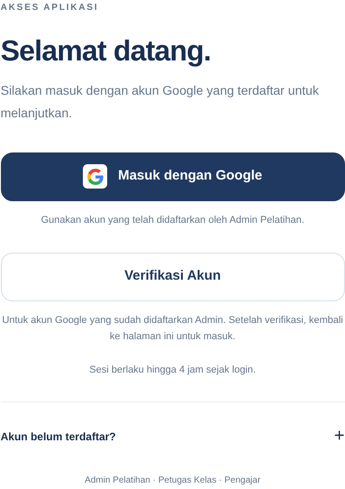

Pusat Pengembangan Aparatur KomdigiMonitoring Pelatihan Pegawai
Contoh format panduan · Bagian umum
Masuk ke aplikasi
Gunakan akun Google yang telah didaftarkan oleh Admin Pelatihan untuk membuka aplikasi.
Untuk: Admin Pelatihan · Petugas Kelas · Pengajar

Verifikasi akun baru
bila diperlukan
Pilih Verifikasi Akun, lalu pilih akun Google yang didaftarkan Admin. Setelah berhasil, halaman login tampil kembali.
Masuk ke aplikasi
Pilih Masuk dengan Google, lalu pilih akun yang terdaftar. Aplikasi menampilkan halaman sesuai akses Anda.
Jika akun belum terdaftar
Buka Akun belum terdaftar? untuk petunjuk bantuan. Hubungi Admin Pelatihan untuk pendaftaran atau pemeriksaan akses.
Jika sesi Anda masih berlaku, aplikasi dapat langsung terbuka. Sesi berlaku maksimal empat jam sejak login.